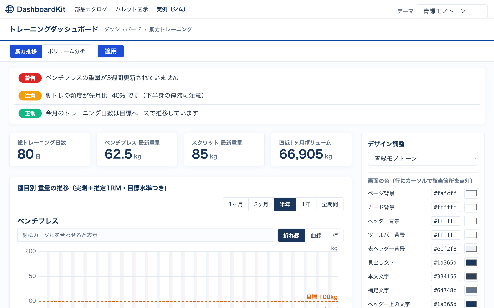
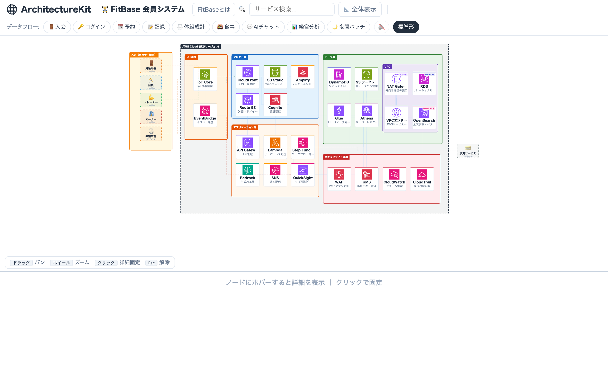
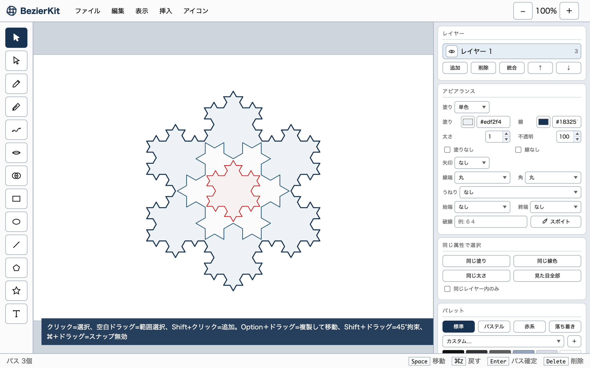
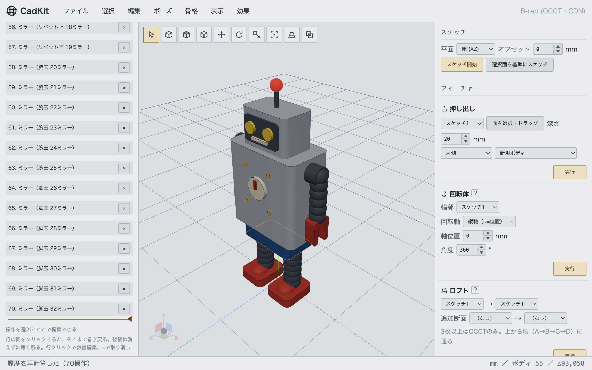
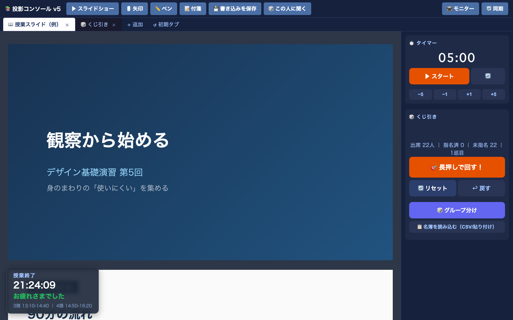

ダブルクリックで起動する、
自分の道具箱。
スライド、ダッシュボード、AWS構成図、表計算、ガント、ベジェ描画、3D CAD、スクショ整理、写真現像、授業コンソール。仕事と授業で毎回作っていたものを、ブラウザで使えるキットに削り出した。ビルドなし、クラウド送信なし、サブスクなし。見た目はDesignKitで揃えた。
一覧ALL KITS
| キット | ひとこと | 入口 |
|---|---|---|
| SlideKit | スライドをHTMLで作りPPTXに変換。ブラウザ上で直接編集（移動・色・表・画像⌘V） | パターン集 |
| DashboardKit | ダッシュボード部品キット。KPI・グラフ・テーブル・テーマ6種 | 実例 グラフの型 配色 |
| ArchitectureKit | ホバー詳細＋フローアニメ付きのAWS構成図。データ差し替えで量産 | 題材の説明 |
| CadKit | ブラウザ3D CAD。スケッチ拘束→押し出し・回転・有機ボディ | |
| BezierKit | イラレ風ベジェ描画。画像トレース・筆線・可変線幅・うねり効果 | アイコン集 |
| GanttKit | 触れるガントチャート。タイムカーソルで「その日の断面」を見る | |
| CalcKit | エクセル相当の表計算。式・関数・複数シート。表をスライドやガントに書き出す | 仕様 |
| CaptureKit | Snagit代替。OS標準撮影＋日付カタログ＋検索。独自形式に縛られない | |
| PictureKit | RAW現像・非破壊補正・クロップ・JPEG書き出し（唯一のサーバー型: RAW現像にPythonが要るので手元で .venv を起こす。外へは送らない） | 使い方 |
| DocKit | ワークスペース中の.mdを1つのビューアで。直リンクで共有 | |
| ResearchKit | 調査の問い、版ごとの進化、採否、最終資料を1本で追跡 | 使い方 |
| ClassroomKit | 対面授業の教員コンソール。教材切替・タイマー・あみだくじ・進行表 | くじ |
| DesignKit | 全キット共通のデザインシステム。トークン・部品class・作法の正本（design-kit.css 1枚） | 使い方 |
リンクは全部このファイルからの相対パス。このページ自体もHTML1枚で、ワークスペースごと持っていけばそのまま動く。
つくる — 資料・可視化SLIDES / DASHBOARDS / DIAGRAMS
お客さん・チーム・授業に見せるものを作るキット群。共通の考え方は「正本はHTML、成果物は変換で出す」。ブラウザで確認しながら作り、確定したらPPTXやPNGに落とす。
01SlideKit

スライドをHTMLで書き、python-pptxでPPTXに変換する。全要素が絶対座標のdata属性を持ち、変換後もPowerPointで文字・色を編集できる。ブラウザ側では✏️モードで移動・色・太字・箇条書き・ページ複製まで直接編集でき、編集結果は「変更をコピー」でKiroに貼り戻す。AWSテンプレート出力にも対応。
- 雛形コピー→中身差し替えが標準。独自CSSを書かない（PPTX互換が保証される範囲だけ使う）
- PowerPointネイティブ箇条書き（Enterでマーカー継続・Tabでレベル送り）
- スクショ用プレースホルダーに⌘Vで画像差し込み。アス比自動フィット
- プレゼン中のポストイットメモ、パターン・図解カタログ同梱
- 発表者ビュー（別窓に現在・次・ノート・時計・番号。本窓のページ送りに追従）
- PPTX→HTML の逆取り込み（pptx_to_html.py。他人のデッキを雛形の作法に。画像は images/、ノートは data-notes、変換できない要素は注記）
- 図解相談: 「案だけコピー」「書き換え依頼をコピー」でKiroへの依頼文を生成する。外部APIへは送らず、クリップボードに置くだけ
- ページ追加メニューから「＋ガント」「＋表(CalcKit)」。別タブでGanttKit／CalcKitが開き、作った表やガントがデッキに1枚入る
雛形パターン集図解カタログ検証: python3 SlideKit/run_check.py 対象.html
02DashboardKit

ダッシュボードを毎回ゼロから書かないための部品キット。空divにmountする方式で、KPIカード・グラフ・アラート・テーブル・期間切替・配色パネルが揃う。データはページ側の純関数で整形して渡す（キットは集計しない）。
- 実カレンダー間隔の時間軸、週末帯、目標破線、予測は破線、日付クリック連携、グラフ上の注釈（施策開始日など）
- グラフ18種: 折れ線・なめらか・棒・横棒・円・ドーナツ・積み上げ・レーダー・ヒートマップ・サンキー（値ラベル・ホバー強調）・カレンダーヒートマップ（月の格子に段階色＋文字）・状態タイムライン（行×期間の帯・締切の縦線）・ツリーマップ（面積＝量・色＝区画か段階）・樹形図（分類・折り畳み・枝に条件や確率を書く場合分け・役職と顔写真の組織図）・デンドログラム（似たものを近い順にまとめるクラスター分析・切る距離でまとまりの数と色）。欠測つきの計測点（線を切り実測に丸）。正常範囲（絶対値／直近N点の平均±%／±σ）を帯で敷き、外れた点に赤い輪と「範囲外 N点」・小さい工程表 gantt（進捗の塗り・◆・今日の線・控えからの「+N日」。GanttKit のデータは
DK.fromGanttKitでそのまま）・予定カレンダー schedule（日ごとの予定の文字・ほか N・種別の●）・週の時間表 week（時刻×曜日の格子に予定の箱・重なりは横並び） - 人手計画カード: 作業区分ごとに 物量→必要工数→必要人数 vs 計画（＋/−で動かせる）→終了見込み→判定 を1枚に。物量予測から人の配置を決める
- 印刷・PDF用レイアウト（操作部品を隠し白地・A4で要素が切れない。darkテーマでも白地）
- テーマ6種（seiryoku／pastel／corporate／dark／newspaper／awspurple）。色はCSSカスタムプロパティ経由で、ページ側に色を書かない
- 型の選び方: 型ごとに「向いている問い・データの形・向かないとき→代わりの型」の表を本体に持つ（
DK.chartGuide()）。見せたいことから型を勧めるDK.suggestChart、合わない使い方（円に7項目・負の値など）を知らせるDK.chartAdvice。グラフの型の一覧で全部の型を見本つきで見比べられる - 配色パネルでhex直接編集→CSV保存で共有。本体はテスト659件で保護
- グラフを SlideKit に貼る: 作っているデッキに混ぜるなら kits-mcp の
dashboardkit_slide_block（スライド上の枠を渡すと、凡例＝編集できる文字と位置付きの SVG を HTML の部品で返す。貼るだけで PPTX でも図形と文字のまま）。1グラフ1枚の別デッキでよければdashboardkit_to_pptx（題・注・凡例は PowerPoint で編集できる文字、グラフは SVG）。GanttKit・ArchKit と同じ基準（slide-guard 停止0） - CalcKit の表からグラフ:
dashboardkit_from_calcは CalcKit で計算した値を読む（文字で保存された数・式の答えもそのまま使える）
部品カタロググラフの型の一覧実例（ジム会員ダッシュボード）配色マップ検証: cd DashboardKit && npm test
03ArchitectureKit

ホバーで役割説明、クリックでデータフローがアニメーションするAWS構成図。エンジンとデータを分離してあり、データファイル1本の差し替えで新しい図が作れる。全ノードに「このシステムでの役割」と試験ポイント（SAA/DEA）を書く規約。
- 実例は架空パーソナルジムFitBase（25サービス・9フロー）。DashboardKitの実例と世界観を共有
- レイアウトは左=入力・中央=AWS・右=出力で固定。スライドにはPNG書き出しで貼る
- IaC（CloudFormation / CDK の template.json）から構成図データを自動生成（iac_to_archkit.py・主要30種）。概算料金の列（pricing-table.json・東京リージョンの目安）と合計表示
- 現行→提案の差分（
?diff=現行.jsで追加＝緑「新」・削除＝赤点線「廃」・変更＝橙、上に「追加3・削除1・料金 +$66/月」の帯）、Well-Architected 自己点検（図から機械で言えることだけを柱ごとに。「設計が悪い」ではなく「図には無い」）、自動配置（利用者→入口→アプリ→データ→分析の列・交差を減らす。IaC から起こした仮配置向け）、PPTX 1枚（図＋サービス・役割・概算の表）
実例（FitBase構成図）FitBaseとは白紙デモ検証: node ArchKit/archkit-check.js データ.js
04GanttKit

canvas製の触れるガントチャート。看板機能はタイムカーソルで、カーソルを任意の日付へドラッグすると「その日に何が動いているか」の断面が見える。ArchitectureKitと連動させると、構成図がその時点の状態で色付く。既存版のタイムラインエンジンをキット化した。
- 帯の端点をドラッグして日付を直接動かす。依存矢印は帯の先端から出る。ズームは週/日
- 「表(CalcKit)で開く」でガント⇄表を往復できる。表で一気に入力→ガントでドラッグ調整→表に戻して集計
- スライドへ1枚として書き出し。Undo/Redoあり
- 担当者ごとの負荷の行（重なる帯の数を濃さで）、日本の祝日（2025〜2027）、クリティカルパスの強調
- 計画の控え（ベースライン）と遅れ: 「📌 計画を控える」で当初計画を保存、以後はバーの下に薄い帯で元の計画、ずれを「+12日」（赤）／「−15日」（緑）、右上に「計画からの遅れ N件・最大 +M日」。進捗率（バーの中を塗り、今日の位置と比べて「遅れ Npt」）。この時点の状況をタイムカーソルの日について1段落の文に（進行中・今月開始/終了・次のマイルストーン・遅れ）。日単位ズーム（月＋日の2段ヘッダー・ISO 週番号・土日祝）。CalcKit 往復に控え・遅れ・進捗の列
- kits-mcp の
ganttkit_dashboardで工程表を 1 枚のダッシュボードに（KPI・DashboardKit の小さい工程表・遅れの表・状況の文）
起動検証: python3 GanttKit/check.py
05CalcKit

エクセルの代わりに使う表計算。式エンジンは自前パーサで、evalを使わない。セル参照・絶対参照・比較・連結に加えてSUM／IF／IFERROR／SUMIFS／VLOOKUP／INDEX・MATCH／EOMONTH／NETWORKDAYS／TEXTなど62関数。正本は.calc.jsonなので、保存ファイルをそのままKiroに渡して「この表を◯◯にして」で続きを頼める。
- フィルハンドル（式は相対シフト・連番・日付は+1日）、日付型はExcel互換シリアル値、列ヘッダ右クリックで並べ替え（行内の式が移動に追従）
- 複数シートのタブ。シート間参照は
=収支!N21で、シート名を変えると式が自動で追従する - Excelと⌘C/⌘VでTSV往復。行列の挿入・削除で参照が追従、切れたら#REF!
- 書き出しはSlideKitのスライド（表はPPTXで編集可能・グラフはDashboardKitのSVG）／GanttKitのガント／CSV／.xls。.xlsx の読み込み（全シート・式・日付・列幅・%¥桁区切りの書式・太字塗り色・結合。SheetJS同梱）
- 条件付き書式（以上／以下／範囲／含む／空→塗り・文字色・太字、データバー）と簡易ピボット（行×列×合計/件数/平均。元が変わったら更新）
- GanttKitと表⇄ガントで往復（進捗%・控え開始/終了の列もガントの progress・控えに戻る）。kits-mcp から
calckit_values（計算済みの値）・calckit_to_xlsx（式ごと Excel）・calckit_to_pptx（SlideKit の型で PPTX・guard 停止0）
起動仕様検証: python3 CalcKit/check.py（式・書き出し30項目＋SlideKit往復E2E）
えがく — 描画・造形DRAWING / MODELING
イラレとFusionをやめられるか、を試している系統。まだ全部は置き換わらないが、日常の8割はこちらで済むようになってきた。
06BezierKit

ブラウザ製のベジェ描画ツール。ペン・アンカー編集・パス演算・文字のアウトライン化・レイヤーというイラレの基本に加えて、画像トレース（Schneider法の曲線フィット付き）と書道系の線表現を持つ。
- 線のアピアランス: 線端（丸/切り/突出）・角（丸/尖り/面取り）・うねり（波線/ギザギザ）・破線・可変線幅・筆/抜き/掠れ。全部非破壊
- 画像をドロップ→色数を選んでアウトライン化。色ごとにレイヤー分割、穴も抜ける
- ライブラリ（paper.js・opentype.js・pdf.js）と日本語フォント12本（Noto Sans/Serif CJK JP は日本語サブセット・ほか8書体）は vendor/ に同梱。外部参照ゼロ、ネットがなくても文字まで出る
- 整える…（水平垂直の吸着・辺の長さ・左右対称化・角の統一。ライブプレビュー）と配色の差し替え（DesignKit／DashboardKitテーマ／自作パレットへ明るさ順で一括置換）
- 幅ツール・シェイプビルダー・スムーズ・単純化・クリッピングマスク・ロックを基準に整列（FreeHand流）
- アイコンカタログ178個同梱（資料用52＝共通・人と役割・体とコンディション・物流・製造・データと機器・授業とリサーチ／道具用126）。カタログ⇄本体を往復して図案を編集できる。kits-mcp の
bezierkit_iconsで名前・タグから引いてスライドの色で SVG に、bezierkit_illust_checkで Kiro が描いた SVG が PPTX に図形のまま渡るかを検査 - 実物からのアイコン化を自動化した。ロゴや写真を渡すと、マスク→トレース→96×96正規化→カタログ反映→仕上がりの自動目視まで1コマンドで通る
- 入稿: 画像や図形から白フチ付きのカットラインを作り、レイヤー3枚（デザイン／カットライン／トンボ）の .ai を出す。出す前に塗り足し・間隔・端からの距離を検査。Illustratorで保存し直すドロップレット付き（nyuko/）
起動アイコンカタログ検証: python3 BezierKit/cdp-check.py（17項目）／python3 BezierKit/icon-check.py
07CadKit

ブラウザで動く3D CAD。スケッチに拘束（水平・垂直・平行・直角・等長・一致）を付けて、押し出し・回転などのフィーチャーで形にする履歴ベースの流儀。背骨＋断面キーで作る有機ボディにも対応し、ゼブラ表示で面の張りを確認できる。
- 平安京の歴史建築13点を収録（羅城門・朝堂院・豊楽院・内裏・大内裏・東寺・西寺・寝殿造5種・町家・掘立小屋）。内裏は内裏図と再現図に合わせて外郭築地・15門・殿舎29棟まで起こした
- 作りながら確かめる仕組み: 資料をWikipediaから調べて保存、モデルの寸法をJSONで数値検証、仕上がりをスクリーンショットで自動目視。検証→書き出しは1コマンド
- 図面SVG／PDF（三面図・第三角法・外形の寸法線・図枠）。線画SVGは隠れ判定の二分探索・曲面の輪郭・ベジェフィットで点数が約半分
起動検証: 画面内 #test で回帰一式／python3 CadKit/shot-check.py
まわす — 日々の運用DAILY OPERATIONS
派手さはないが毎日触るもの。ファイルがどこにあるか・何だったかを思い出す時間を削る。
08CaptureKit

Snagitの独自形式が使いにくい問題への回答。撮影はmacOS標準のscreencaptureに任せ（常にPNG/MOV）、キットは保存・日付カタログ・検索を担う。撮った画像はクリップボードにも入るので、SlideKitのプレースホルダーへ⌘V直行できる。
build-app.shでCaptureKit.appを生成すると、撮影・クロップ・録画をまとめて起動できる- カタログはfile://のビューアで日付順・検索・タグ。Snagit資産の取り込みスクリプトも準備済み
- 画像の中の文字で検索（macOS Visionでオフライン文字認識）。最後に撮ったもの・今日の分・保存先の入口。Snagit経由の印
- ホットキーは ⌃⇧⌘C 推奨（⇧⌘C は Snagit が常駐していると取られる）
- アプリ別の絞り込み（Snagit のウインドウ名からアプリを取り出して件数順のチップ・上位10＋ほか N）。kits-mcp から
capturekit_tag（タグ・グループ・メモを控え付きで書く）とcapturekit_to_slide（画像を SlideKit の型で PPTX に・guard 停止0）
09PictureKit
Lightroom／Photoshopから日常の写真作業を移すRAW現像・画像編集Kit。RAWをローカルで開き、非破壊recipeで補正してフルサイズJPEGへ書き出す。12キットで唯一のサーバー型: RAWのデコードにPython（rawpy）が要るので、手元で .venv を起こして 127.0.0.1 だけで動かす。file:// では開けないが、外へは何も送らない。
- 露出・色温度・Tint・明暗・質感・彩度、RGBヒストグラム、5点トーンカーブ、白黒、90°回転
- 1:1／3:2／4:3／16:9クロップ、Before／After、preset、recipe JSON保存／再読込
- 選択マスクの50%等高線を画像なしの編集可能SVGとしてコピーし、BezierKit／CadKitへ渡せる
- 星（1〜5キー）・キーワード・撮影日・機種で絞り込み。書き出しプリセットと一括書き出し（進捗・中止）
- kits-mcp から:
picturekit_to_slide（現像して SlideKit の型で PPTX・guard 停止0）／picturekit_contact_sheet（絞り込んだ写真の一覧 PNG）／picturekit_palette（写真の主要色→BezierKit の配色差し替えへ）／picturekit_auto（自動補正を recipe に）
起動使い方検証: PictureKit直下で .venv/bin/python check.py
10DocKit

ワークスペースに散らばる.mdを1つのビューアで読む。#p=パスの直リンクが作れるので、「あのメモどこ」がリンク1本で済む。カタログは読み取り専用、正本は常に.md側。
- プロジェクト別一覧・検索（題・抜粋・本文）・関連文書の自動検出。選択した箇所をKiroへの依頼文としてコピーできる
- Kiroのルール（steering）とスキルの専用カタログ付き。参照切れのリンクと、常時読み込みの膨張を検知する
- 被リンク: 開いている .md をどこが参照しているかを一覧（相対リンク・絶対パス・#p= 直リンク）。参照切れは明示参照（リンク・直リンク・コード内パス）だけを数え、同名が複数で決まらないものは「曖昧」として別に出す
- 検索は題・抜粋で先に引き、「本文も探す」で本文のチャンクを読み込んで本文一致を足す（一致行の抜粋つき）。kits-mcp から
dockit_ledger（決定・宿題台帳。dockit_rescanが台帳も作り直す）・dockit_recent（直近に変わった文書）・dockit_to_docx（md→Word。Word/Excel/PPTX の納品3点）
ビューアルール・スキル一覧検証: python3 DocKit/check.py
11ResearchKit
Quick調査や企業分析を、依頼文だけで終わらせず、V1〜Vnの質問・受領結果・人間の違和感・次版の変更まで残す。主張を採用／不採用／保留／要検証に分け、最終資料へ何が残ったかを追跡する。
- 案件Markdownを走査し、調査の進化と採否台帳を1画面に表示。正本はプレーンな.md
- Quick初回依頼と案件記録テンプレートをコピーし、同じ型で次の調査を始められる
- 詳細本文はDocKitへ直リンク。閲覧機能を二重実装しない
- 主張ごとの確度（高・中・低・未評価）で色分け・絞り込み。出典URLの到達チェック（押した時だけ外へ接続）
- Kiro が回す: kits-mcp の
researchkit_request（Quick に貼る依頼文）→researchkit_ingest（Quick の docx か Kiro の調査 md を版として取り込み、本文・受領索引・案件 md の V 行・仮説検証の候補を作る）→researchkit_review_brief（レビューの材料。DocKit の関連文書つき）→researchkit_add_review（レビュー保存・採否台帳・現在版を更新）。ブラウザの9手順が「貼る・落とす・頼む」の3つに
調査台帳使い方検証: python3 ResearchKit/check.py
12ClassroomKit

HTML教材を使う対面授業のための教員コンソール。以前担当した教育案件のときに思いついたまま日の目を見なかったアイデアを、単一HTML＋設定ファイル1本の形で具現化した。教材切替や進行の道具が教卓のブラウザ1画面に収まる。
- 班分け（人数か班数・固定して作り直し・大きな表示）と座席表（机の配置は設定JSON・ランダム／前回と同じ／班ごと）。結果は groups-／seats-YYYYMMDD.json に保存
- 投票（問いと選択肢→外部フォームURLがあれば選択肢ごとのQR、無ければ挙手カウンターと棒グラフ。polls-YYYYMMDD.json）。QRは vendor/ 同梱
- 授業の進行表（設定の
CLASSROOM_PLANを「▶ 次へ」で歩き、今の区切り・残り・次・計画との遅れ/先行を時計欄に）。「💾 今日の記録」で出席・指名・班・座席・投票・進行表・付箋をclass-YYYYMMDD.jsonに。kits-mcp のclassroomkit_day（まとめの文）・classroomkit_attendance_to_calc（出席履歴→CalcKit の○×と出席率）・classroomkit_poll_to_slide（投票→棒グラフのスライド・guard 停止0） - kits-mcp の
classroomkit_timetableで授業の予定を DashboardKit に（月の予定カレンダー＋週の時間表・CLASSROOM_PLAN の区切り）
コンソールあみだくじ検証: python3 ClassroomKit/check.py
土台 — 共通の見た目とAIの手DESIGN SYSTEM / MCP
キットそのものではないが、12本を支える2つ。見た目を揃える正本と、AIから道具として呼ぶ口。
13DesignKit
全キット共通のデザインシステム。トークン（本文16px・ラベル14pxの下限・角丸0既定）、部品class（.kit-header .kit-btn .kit-table …）、作法を design-kit.css 1枚に焼き込み、各キットは2行で読み込む。構造・サイズ・文字だけ共通にし、配色は各キットが --kit-* を上書きしてテーマにする。
- css を変えると読み込んでいる全キットの見た目が一斉に変わる（戻すのも1か所）
- BezierKitの配色差し替え・DashboardKitのテーマは、このトークンを参照する
見本使い方検証: python3 DesignKit/check.py
流儀HOUSE RULES
- file://で動く。ビルドシステムなし、バンドラーなし、サーバーなし。ダブルクリックが唯一のデプロイ
- エンジンとデータを分ける。ArchitectureKit・DashboardKit・GanttKitはデータファイル差し替えで量産する。ロジックをデータ側に書かない
- 変更したら回帰テスト。各キットにチェッカーがあり、機能追加のたびにテストも足す。壊れたまま進めない
- 日本語入力を壊さない。Enter で確定する欄は変換確定の Enter（
isComposing）を見分ける。2026-11-15 に Chrome/Edge/Firefox/MDN の modern-web-guidance（legacy-scan）で11か所を見つけて直し、各キットの検査に入れた - 見た目は共通ヘッダーで揃える。丸に井桁マーク＋キット名の48pxヘッダー。配色は各キットの文化を残す（雰囲気は揃える、完全には揃えない）
- キット同士がつながる。CalcKitの表→SlideKitに1枚として／GanttKitのガントへ。ガント→CalcKitに戻して集計。グラフはDashboardKitが描く。CaptureKitのスクショ→SlideKitに⌘V。PictureKitの選択輪郭→BezierKit／CadKitへ。BezierKitのアイコン→各キットのUIへ。CadKitの部品表（BOM）→CalcKitの正本へ。FitBaseという架空ジムをArchitectureKitとDashboardKitの実例で共有
- 正本は常にプレーンなファイル。HTML・md・JSON・JSのどれかで、独自バイナリ形式を作らない。10年後も開ける
- 書くのはAI、直すのは人。どのキットもLLMを内蔵していない。代わりに、正本をKiroが読み書きできるテキストにして、規約で書き方を縛り、出来を機械が確認する（各キットのチェッカー・スクリーンショットの自動目視）。AIへの依頼はクリップボード経由。外部へは何も送らない